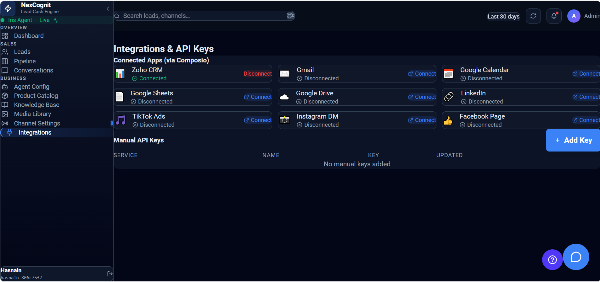
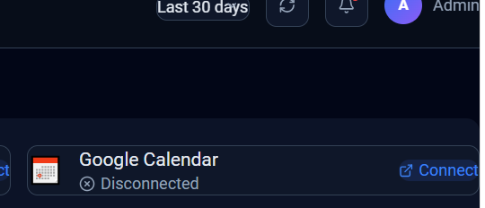
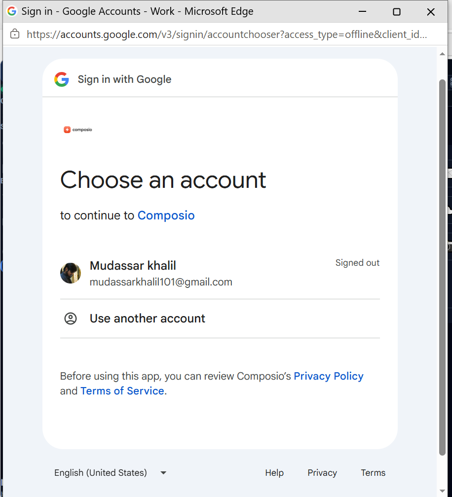
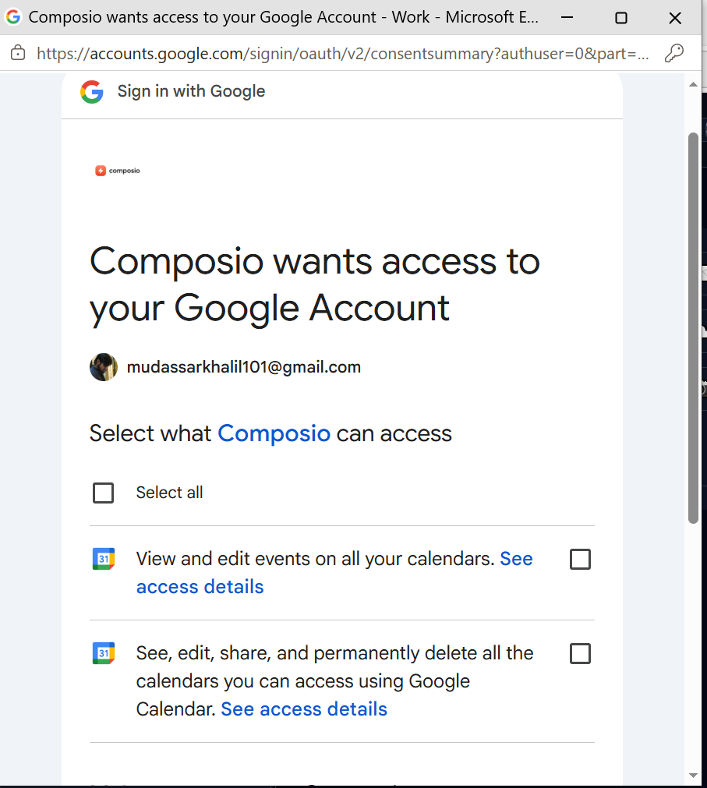
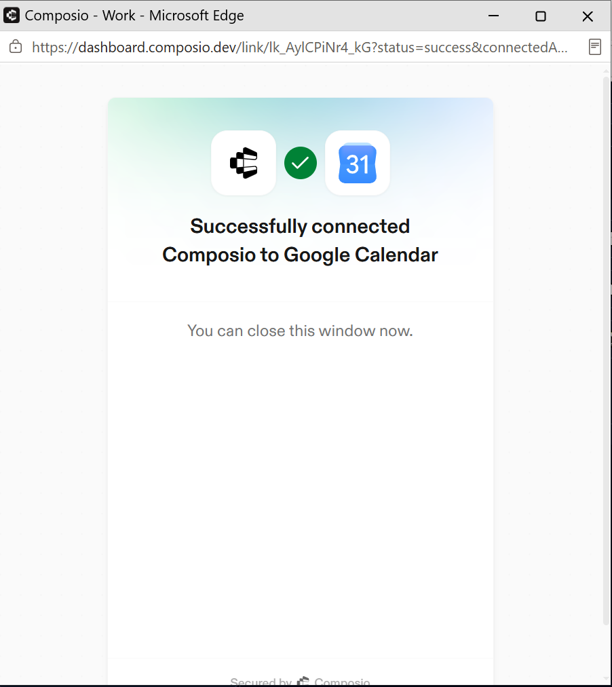
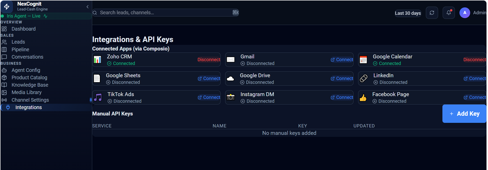

Google Calendar
The Google Calendar integration lets NexCognit access your calendar to support meeting scheduling and synchronization. This guide walks through connecting Google Calendar to NexCognit and confirming that the connection is active.
Prerequisites
- Active NexCognit account.
- Active Google account with access to Google Calendar.
- Permission to authorize third-party integrations.
Step 1 — Open Integrations
Open the Integrations section from the NexCognit dashboard to begin connecting Google Calendar.

Step 2 — Connect Google Calendar
Locate Google Calendar in the Integrations list and click Connect to begin the authorization process.

Step 3 — Choose Your Google Account
Select the Google account you want to connect with NexCognit.

Step 4 — Grant Permissions
Review the requested permissions, allow the required access, then click Continue.

Step 5 — Connection Successful
After authorization is complete, a confirmation message appears indicating that Google Calendar has been connected successfully.

Step 6 — Verify Connected Status
Return to the Integrations page in NexCognit and verify that Google Calendar now shows a Connected status.

How Google Calendar Integration Works
Once connected, NexCognit can access your Google Calendar to support meeting scheduling and calendar synchronization. This enables AI agents to automatically create and manage meetings based on configured workflows.
Things to Know
- Connect the Google account you want NexCognit to use.
- If access is revoked from Google, reconnect the integration from NexCognit.
- Verify the Connected status before using automatic meeting scheduling.